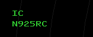
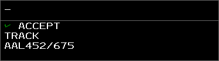
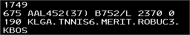

Owner ruling: with the YAAT Scope focused, typed text goes into a preview area drawn on the Scope; Enter executes it and its response shows in a feedback area on the Scope. The area takes scope entries (in the profile's CRC dialect) and YAAT pilot commands, and the preview names which kind it read before the entry is sent. YAAT's main command line keeps its own input. The open question is where and how that area is drawn: three lanes below.
Every window is the Scope window's client area drawn to scale, 1 CSS px = 1 DIP, at 1360 × 800 DIP with its 45 DIP toolbar. Targets are blue symbols with white blocks as ScopeRenderer draws them; UAL238 is the selected aircraft. Each lane shows (i) typing the pilot command UAL238 FH 270 on a STARS profile, (ii) typing the ERAM entry QQ 250 UAL238 on an ERAM profile, (iii) after Enter: an accept, and a small frame with an error. The kind the preview names is gold for a PILOT command and cyan for a scope entry (here ERAM), with the verb spelled out beside it (step-5 map D5: "ERAM QQ (interim altitude)" vs "PILOT …"). Dashed frames in (iii) are 1:1 crops of the same window, their window coordinates in the caption.
measuring...
The Preview Area is where textual commands are entered, and where the responses to various system commands are displayed. By default, the preview area is just below the SSA, but it can be repositioned by the user.Its brightness is the DCB's FDB setting (stars.md:166:
Sets the brightness for Full Data Blocks and the preview area.);
<ESC> Clears preview area.(stars.md:1439);
<MULTI FUNC>P<SLEW> Relocate preview area.(stars.md:1240).
The Message Composition Area (MCA) contains two text areas: the upper Preview Area where commands are entered, and the lower Feedback Area where command processing success and error messages are displayed.eram.md:58:
Esc clears the Preview and Feedback areas.The MCA cannot be suppressed, but can be repositioned by left-clicking anywhere within its boundaries.Its menu (eram.md:70-73) sets PA LINES, WIDTH (characters per line), FONT and BRIGHT.
The Response Area (RA) displays text outputted by commands. For example, using the QF command outputs flight plan details in the RA.eram.md:85:
The RA cannot be suppressed, but can be repositioned; eram.md:98:
Ctrl+Delclears the Response Area.
ALT FORMAT).

